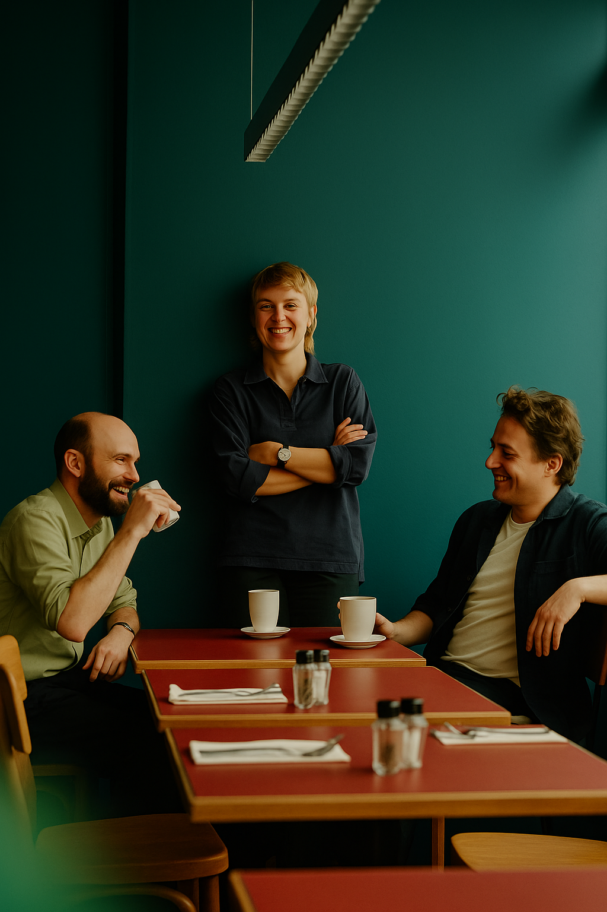

A concept review of millennials4boards.com — what we heard, what we'd change, and a clickable walk-through of the eight pages. Built brand-strict on the new identity system.
Millennials4Boards has the proposition, the people, and the proof points. The current site is generic where it should be specific — it tells visitors what the network is, but rarely shows them what it actually does, who is behind it, or why anyone has written about it.
"57" and "75%" land hard — but without attribution, sceptical readers (chairs, GCs, CHROs) discount them. The current site asserts. The new site cites.
Current: "57 the average age of new Board members in Europe" — unsourced.
Proposed: 57 yrs · Egon Zehnder, 2024.
Aspiring directors, sitting directors, and corporates arrive on the same page with the same single ask. Each needs a different conversation — and the home page should tell them which one.
Proposed: three paths on the home page — Aspiring · Sitting · Corporate — each routed to its own first ninety days.
"Vibrant community" and "dynamic mentor-mentor program" are abstractions. Boardroom buyers want to see names, seats landed, press clippings — not adjectives.
Proposed: named testimonials with role & cohort, a press pullquote strip (FT · Handelsblatt · NZZ), and a journal rail with real titles.
A rotating photo strip with no labels does the opposite of what a team page should — it hides the network's best asset. Who these people are is the offer.
Proposed: uniform B&W 4:5 portraits, named cards, role, sector expertise, LinkedIn — Management Board first, Founders below, Advisory Council last.
Tiered pricing exists, but there's no structured checkout, no trust cues, and no transparent VAT/total. For a CHF 300+ purchase, decision hygiene matters.
Proposed: two pricing cards side-by-side, then a three-step wizard (About you · Ambition · Confirm & pay) with a sticky order summary.
Navigation is a flat top bar, typography mixes weights, and the photography is stocky. The new identity system (Poppins, Mint Leaf accent, editorial tone) never makes it to the live site.
Proposed: floating pill nav, full-bleed typographic hero, B&W portraits, mint-only accent, Poppins Light + SemiBold throughout.
Every decision on every page can be traced to one of these. If a section didn't earn its place against one of the five, we cut it.
Sources on every stat. Named testimonials. Real article titles. No "vibrant community" anywhere.
Aspiring · Sitting · Corporate. Each routed in under five seconds from the home page.
Press, testimonials, and member wins appear early — before any mission statement.
Poppins Light + SemiBold only. Mint Leaf as the single accent. Real logo, B&W portraits.
Memberships → wizard → Stripe. Transparent VAT. Trust micro-copy at the exact moment of decision.
Click any card to open the full mockup. The funnel runs left-to-right: discover the network, decide to join, convert on checkout.
Home, About, Team, Journal — earn attention and trust in ninety seconds.
Memberships and Partnerships — price, fit, and proof in one screen each.
Contact and Become a member — audience-aware forms, transparent checkout.
Full-bleed hero with floating pill nav, three audience paths, named testimonials, press pullquotes, and a journal rail.
Open the mockup 01 · DiscoverStory arc earning trust in sixty seconds. Brick Ember problem section ("57 yrs" in white), three-block shift, 2022→2026 timeline, signed founders' note.
Open the mockup 01 · DiscoverManagement Board as uniform B&W 4:5 portraits with names, role, sector. Founders grid quieter below. Advisory Council placeholder. Press strip.
Open the mockup 01 · DiscoverEditorial credibility. Segmented tabs (Essays · Events · Member wins), featured event card, six-article news grid, member story portrait, newsletter capture.
Open the mockup 02 · DecideTwo equal-weight pricing cards — white Individual (CHF 300) and Onyx Corporate (From CHF 15k). Member outcomes with avatars. FAQ accordion.
Open the mockup 02 · DecideLogo wall as proof. Three partnership tiers (Corporate · Network · Media). Four case stories — including a deliberate "your partnership here" slot.
Open the mockup 03 · ConvertAudience chips that adapt the form to who's writing. Book-a-call card for senior inbound. Direct email + LinkedIn fallback.
Open the mockup 03 · ConvertThree-step wizard — About you · Your ambition · Confirm & pay. Stripe-native. Sticky Onyx order summary with CHF 324.30 total and trust micro-copy.
Open the mockupA clickable prototype, a slide deck for handoff, and all mockup files in a structure your engineer can pick up tomorrow.